Contents
clear all;
Part a
N = [32 64 128]; A = pi; for i = 1:length(N) disp(['N = ' num2str(N(i))]); n = 0:N(i)-1; nn = 0:2*N(i)-1; x = cos(2*A./N(i).*n); x_1 = upsample(x,2); x_2 = upsample(x,2,1); x_zoh = x_1 + x_2; x_lin = cat(2,upsample(x,2),x(1)); for j = 1:2:length(x_lin)-1 x_lin(j+1) = (x_lin(j)+x_lin(j+2))/2; end x_lin = x_lin(1:end-1); X_ZOH = abs(fft(x_zoh)).^2; THD_zoh(i) = (sum(X_ZOH(1:end/2)) - X_ZOH(2))/X_ZOH(2); X_LIN = abs(fft(x_lin)).^2; THD_lin(i) = (sum(X_LIN(1:end/2)) - X_LIN(2))/X_LIN(2); figure; plot(nn, x_zoh); title(['ZOH Interpolation N = ', num2str(N(i))]) xlabel('n'); figure; plot(nn, x_lin); title(['Linear Interpolation N = ', num2str(N(i))]) xlabel('n'); figure; plot(fftshift(abs(fft(x_zoh)))); title('Part D: ZOH Interpolation Output Spectra'); figure; plot(fftshift(abs(fft(x_lin)))); title('Part D: Linear Interpolation Output Spectra'); end THD_db_ZOH = 10*log10(THD_zoh) THD_db_lin= 10*log10(THD_lin)
N = 32 N = 64 N = 128 THD_db_ZOH = -26.1736 -32.1995 -38.2214 THD_db_lin = -52.3472 -64.3989 -76.4427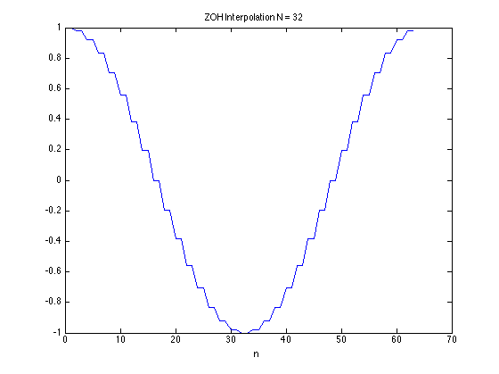 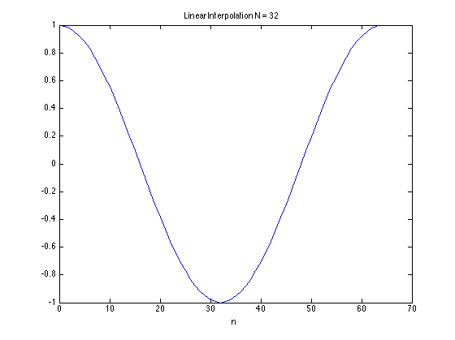 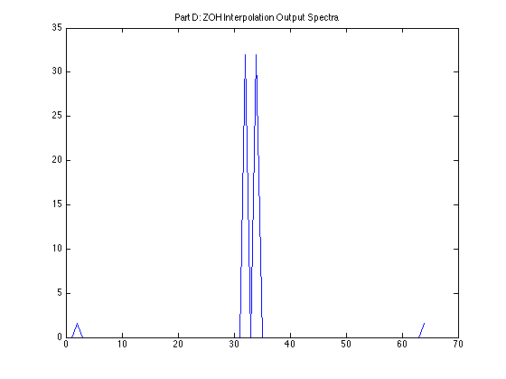 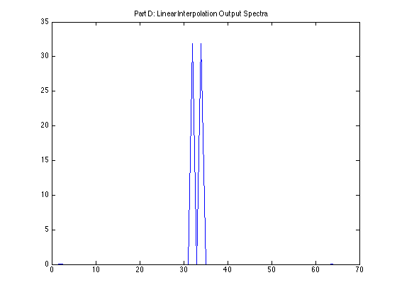 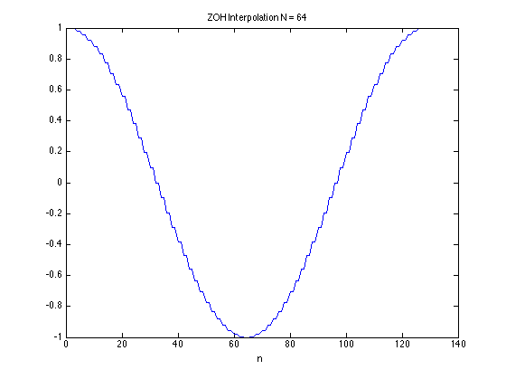 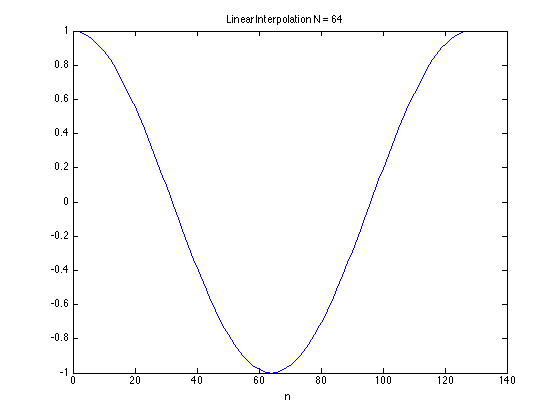 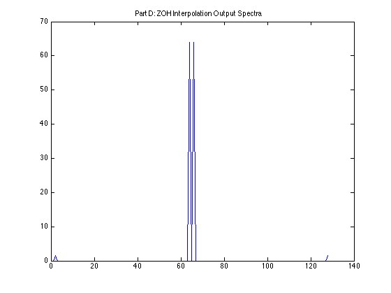 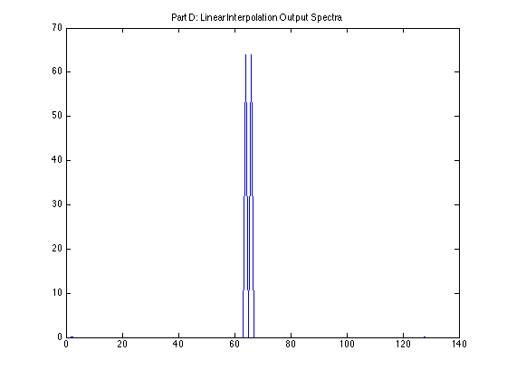 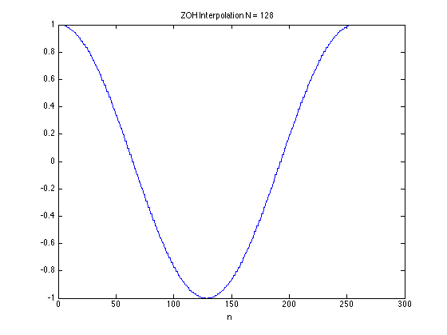 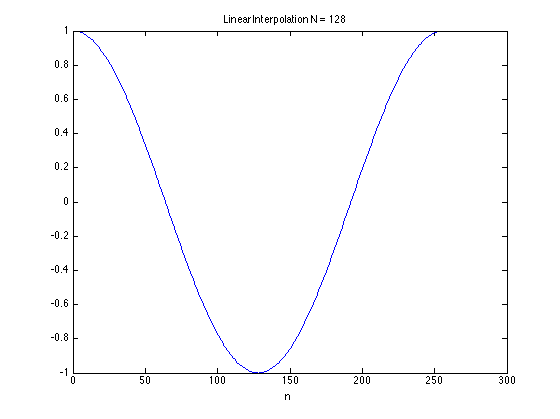 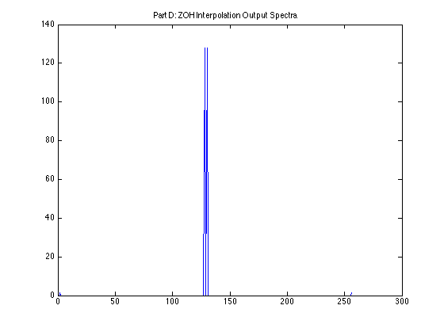 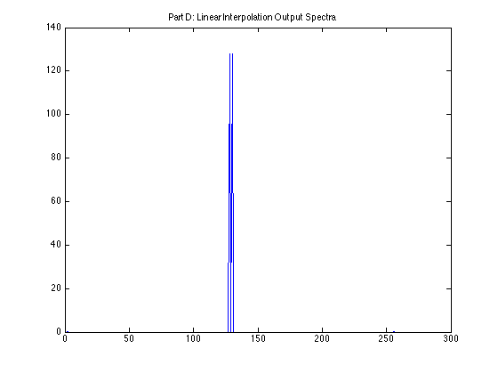
Part B
clear all N = [32 64 128]; A = pi; for i = 1:length(N) disp(['N = ' num2str(N(i))]); n = 0:N(i)-1; nn = 0:2*N(i)-1; x = cos(2*A./N(i).*n); % Perform 8 Bit quantization x = int8(2^7.*x); x = double(x); x = x/2^7; x_1 = upsample(x,2); x_2 = upsample(x,2,1); x_zoh = x_1 + x_2; x_lin = cat(2,upsample(x,2),x(1)); for j = 1:2:length(x_lin)-1 x_lin(j+1) = (x_lin(j)+x_lin(j+2))/2; end x_lin = x_lin(1:end-1); x_lin = int8(2^7*x_lin); x_lin = double(x_lin); x_lin = x_lin/2^7; X_ZOH = abs(fft(x_zoh)).^2; THD_zoh(i) = (sum(X_ZOH(1:end/2)) - X_ZOH(2))/X_ZOH(2); X_LIN = abs(fft(x_lin)).^2; THD_lin(i) = (sum(X_LIN(1:end/2)) - X_LIN(2))/X_LIN(2); figure; plot(nn, x_zoh); title(['ZOH Interpolation N =', num2str(N(i))]) xlabel('n'); figure; plot(nn, x_lin); title(['ZOH Interpolation N = ', num2str(N(i))]) xlabel('n'); end THD_db_ZOH = 10*log10(THD_zoh) THD_db_lin= 10*log10(THD_lin)
N = 32 N = 64 N = 128 THD_db_ZOH = -26.1470 -32.1117 -37.8967 THD_db_lin = -48.0680 -48.7573 -48.3214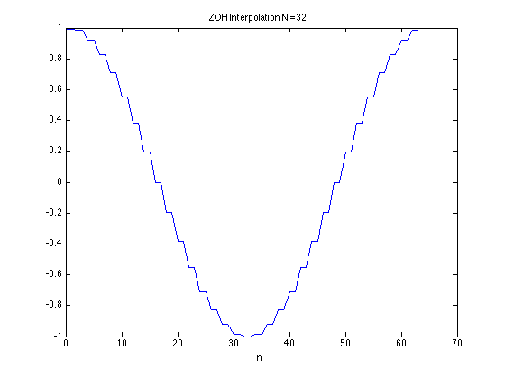 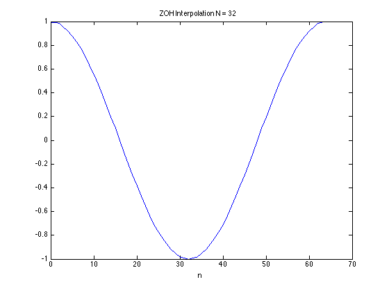 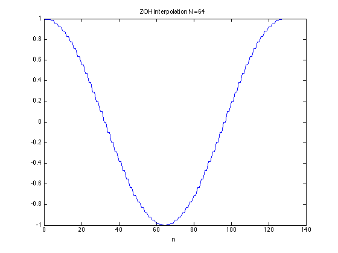 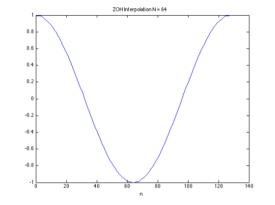 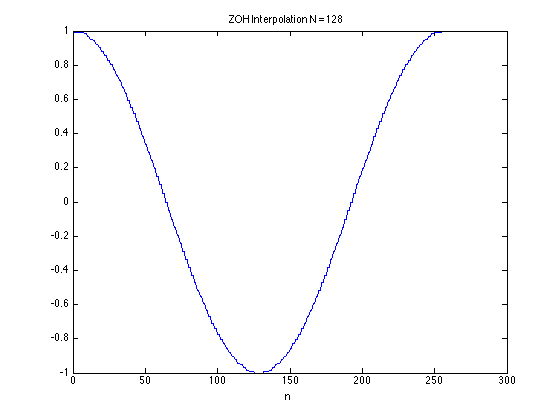 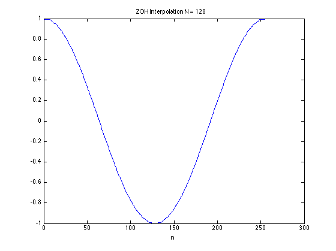
Part C
The linear interpolation is better because it is a tighter filter and it is also smoother unlike H_ZOH. See the frequency response functions below.
clear all; w = -pi:0.001:pi; H_zoh = 1 + exp(1i*w); H_lin = 1+.5*exp(1i*w)+.5*exp(-1i*w); figure plot(w, (abs(H_zoh))); hold on; plot(w, (abs(H_lin)), 'r'); title('H_z_o_h and H_l_i_n'); legend('H_z_o_h', 'H_l_i_n'); xlabel('\omega');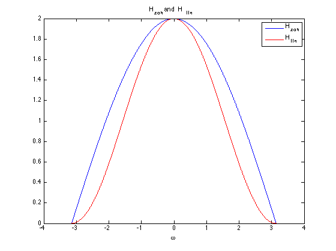